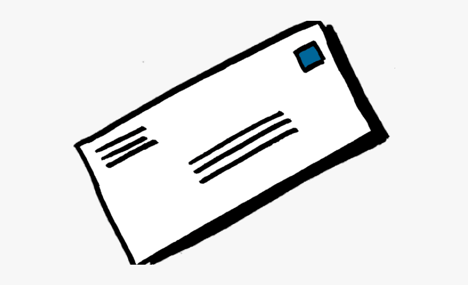
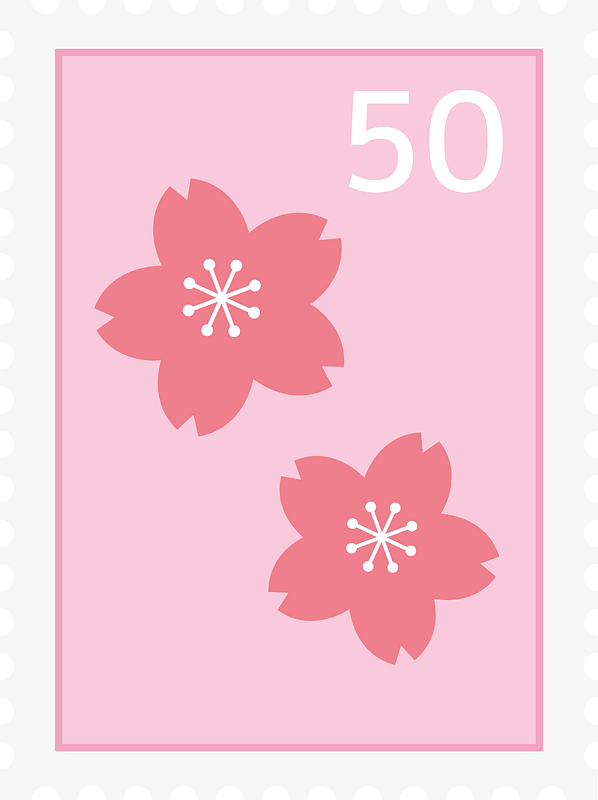

Have you ever wanted a penpal? Since January, I’ve sent letters, stickers, and postcards back and forth with a friend who lives in Romania. It’s an incredible experience- one which allows you to make new friends, learn about another culture and even practise another language and I’d recommend it to everyone- so how’d you do it?

Before anything else, it’s important to be safe- it’s a good idea to write to a friend or relative if you already know someone who lives abroad. If not, it’s still not advisable to contact just anyone. A safe, reputable website I’d recommend is ‘global penfriends,’ which aims to connect you with other people your age who share your interests. Still- it’s important to double check people are who they say they are & make sure your parents are aware of what you’re doing! It’s also a good idea to get to know each other first, BEFORE giving any personal details or sending any letters.

Here are some things you could send to your penpal: